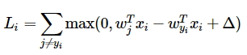

Подготовка проекта
Вторая задача в Assignment #1: Image Classification, kNN, SVM, Softmax, Neural Network — это построение классификатора «SVM: Support Vector Machine».
В задаче используется тот же учебный проект, что и в задании на построение knn-классификатора. Будем работать с svm.ipynb и linear_svm.py
Напомню, что я прошел курс cs231n на задачах 2018-го года. Иллюстрации к данной статье взяты практически без измененеий непосредственно из бекграунда курса. Псевдокод несколько модифицирован.
Что можно узнать, решив задачу
-
увидеть на модели что такое линейные классификаторы
-
понять различия между Nearest Neighbor и линейными классификаторами
-
спроектировать и реализовать функцию потерь
-
разработать эффективное (с точки зрения вычислительной сложности) решение
Немного теории про линейные классификаторы
Для начала авторы курса предлагают вспомнить, что kNN имеет два существенных недостатка — классификатор должен перебрать и запомнить все данные из тренировочного сета, а тестовое изображение должно сравниваться по сути со всем тренировочным сетом. И это дорого. Проблема может быть решена введением двух функций. Score function (оценочная функция) формализует исходные данные и loss function (функция потерь) определяет соотношение между прогнозируемыми метками и фактическими. Задача будет сводиться к минимизации функции потерь.
Далее авторы курса предлагают разобраться, что из себя представляет линейная классификация. В основе лежит простейшая оценочная функция, которая учитывает массив весов (), массив данных об изображении () и байесовский вектор ().
Линейная модель довольно просто интерпретируется
В данном примере анализируется единственное монохромное изображение, состоящее из 4-х пикселей и три класса - красный, зеленый и синий. Массив весов, таким образом, имеет размерность 3х4, изображение 1х4, а параметр 1х4. Исходя из приведенной выше формулы получается довольно тривиальный подсчет, демонстрирующий, что на четырехпиксельной картинке, скорее всего, зеленый класс. Фактически линейную функцию можно интерпретировать так: она ограничивает пространство таким образом, что по одну сторону от линии располагаются все или большинство верно классифицированных объектов, а по другую остальные. Очевидно, что определяет наклон прямой, а дополнительное смещение относительно нуля. Иными словами - это параметры, отвечающие за точность классификации, а сама функция определяет подмножество объектов, относящихся к выбранному классу.
Еще одной интерпретацией линейного классификатора является идея о том, что в массиве весов каждая строка представляет из себя некий прототип изображения или шаблон. Задача классификации сводится к сопоставлению изображений с шаблоном и поиск такого шаблона, который наилучшим образом обобщает изображения выбранного класса. В этом заключается разница с kNN — в случае с ближайшими соседями сопоставление тестового объекта идет со всеми объектами тренировочного сета, а в случае линейного классификатора — с единственным объектом прототипа.
Далее, в курсе кратко разъясняется нюансы линейных моделей.
Во-первых, параметр . Это смещение позволяет избежать ситуации, когда вне зависимости от веса оценочная функция сводится к нулю, если передан x = 0. Грубо говоря, в геометрическом смысле, наш классификатор всегда вращался бы вокруг центра координат, а между тем тестовые объекты могут «располагаться» далеко по осям. Чтобы упростить расчеты с байесовским смещением, его можно вовсе убрать из функции. Трюк очень простой: добавляется еще один столбец в массив весов , куда и помещаем значения , а чтобы сохранить одинаковую размерность, в массив объекта добавляется строка, заполненная единицами. Вы это увидите позже, в задаче.
Во-вторых, разъясняется для чего делается вычитание среднего изображения из изображений всего сета (мы делали это в первом задании по kNN). Данные, извлекаемые из изображения (для CIFAR10 — это [0, 255]) центрируются (для CIFAR10 приводятся к виду [-127, 127], что, в дальнейшем окажется очень полезным фокусом для вычисления градиентного спуска.
Окей. На этом магия score function завершается. Осталось разобраться с loss function.
Multiclass Support Vector Machine loss
Как я уже писал выше, функция потерь определяет соотношение между прогнозируемыми метками и фактическими, а точнее, определяет меру ошибочно классифицированных объектов. Функции такие бывают разные, у нас задача посчитать SVM.
SVM loss в курсе разъясняется довольно тривиально: функция требует, чтобы правильно определенный класс для каждого объекта имел значение выше, чем неправильно определенный класс плюс некая константа. Иными словами, функция подсчитывает корректные классы, которые больше некорректных более чем на заданное значение.
С учетом линейного классификатора, функция потерь начинает выглядеть следующим образом (массивы весов тут транспонированы):

Ну и, наконец, нужно справиться еще с одной небольшой проблемой. Дело в том, что могут существовать веса, с которыми наша функция потерь всегда будет равна нулю. Такие веса могут оказаться неуникальными и кратные наборы весов будут также давать минимальную функцию потерь. А нам-то как раз нужно, чтобы определенный набор весов был предпочтительнее другого набора. Что-бы исправить эту неопределенность, вводится регуляризационный штраф за «большие веса» (в данном случае L2 regularisation, хотя способов регуляризации конечно же больше). Таким образом итоговая функция потерь выглядит так:
где - это число объектов в обучающей выборке, а — еще один гиперпараметр — сила регуляризации (regularisation strength), который также придется задавать.
Кстати, в курсе приводится такой SVM:
def L_i(x, y, W): #1
delta = 1.0 #2
scores = W.dot(x)
correct_class_score = scores[y]
D = W.shape[0]
loss_i = 0.0
for j in range(D): #3
if j == y:
...
loss_i += max(0, scores[j] - correct_class_score + delta) #4
return loss_i
def L_i_vectorized(x, y, W): #5
delta = 1.0
scores = W.dot(x)
margins = np.maximum(0, scores - scores[y] + delta)
margins[y] = 0
loss_i = np.sum(margins)
return loss_i
Что-то подобное нам придется реализовать. Что мы видим? «Наивную» (1) и «векторизированную» (5) имплементации функций. Очевидно, вторая, за счет numpy работает быстрее. Задается «отступ» (2), затем итерируется по всем классам (3), считается количество ошибок (4).
nope…
Еще немного теории — необходимо разобраться с градиентом
Про интерпретацию функции потерь рассказано в Optimization: Stochastic Gradient Descent. Эту функцию достаточно сложно визуализировать, т.к. она, как правило, определена в многомерных пространствах. Вы можете прочитать в бэкграунде курса подробно о том, какие простейшие методы можно использовать для минимизации функции, но наиболее рациональный — необходимо следовать градиенту.
Ключом к пониманию стратегии является пример с одномерной функцией. Градиент показывает мгновенную скорость измененеия такой функции потерь в каждой ее точке или, иными словами, угол обобщенного наклона функции. Это можно выразить через производную:
Стратегия «градиентного спуска» сводится к поиску таких весов, при которых наклон функции потерь будет наиболее «крутым», т.е. скорейшим из возможных способов приведет к оптимальному минимуму. В многомерных пространствах разница заключается лишь в том, что градиентом будет являться вектор частных производных для каждого измерения.
Для решения задач курса необходимо будет посчитать градиент и авторы разбирают два метода - numerical (численный) и analytic (аналитический).
Посчитать численный градиент довольно просто — необходимо определить алгоритм, который в простейшем случае будет принимать функцию , вектор , итерировать по всему индексу и возвращать градиент в каждой точке .
def eval_numerical_gradient(f, x):
fx = f(x) #1
grad = np.zeros(x.shape)
h = 0.00001 #2
# iterate over all indexes in x
it = np.nditer(x, flags=['multi_index'], op_flags=['readwrite']) #3
while not it.finished:
ix = it.multi_index
old_value = x[ix]
x[ix] = old_value + h
fxh = f(x) # 4
x[ix] = old_value
grad[ix] = (fxh - fx) / h # 5
it.iternext()
return grad
Здесь необходимо определить исходную функцию (1), затем инициализировать массив градиентов и задать шаг (2). Затем необходимо проитерировать через все x (3), посчитать значение функции в каждой точке (4) и сравнить его с исходным (5), вернув обновленный массив градиентов.
Тут видно, что взят произвольный, хотя, исходя из формулы, стремится к 0. На практике это посчитать невозможно и приходится использовать очень маленькое значение вместо предельного, например, , как в псевдокоде выше. Кроме того, градиент можно считать используя численное дифференцирование
Итак, градиент будет указывать направление, в котором функция быстрее всего уменьшается. Шаг, с которым мы будем двигаться по функции называется скоростью обучения (learning rate) и это один из важнейших параметров. Очевидно, что для построения численного градиента, придется посчитать значение в каждой точке, что с учетом количества параметров в нейронных сетях, работающих с изображениями, довольно затратная вычислительная задача. К тому же мы вынуждены делать допущение о размере значения .
Эту проблему можно решить с помощью аналитического градиента. По сути, в нашей задаче, вычисление аналитического градиента сводится к подсчету количества классов, которые внесли свой вклад в функцию потерь, а затем масштабированию вектора x по этому значению.
— здесь функция, которая примет значение 1, если выражение в скобках истинно, и 0, если ложно.
Осталось только оптимизировать функцию потерь и эту задачу делает градиентный спуск (gradient descent). В простейшем варианте этот метод определяется так:
while True:
weights_grad = evaluate_gradient(loss_fun, data, weights)
weights += - step_size * weights_grad
Грубо говоря, мы принимаем данные нашего дата-сета, веса и функцию потерь, получаем некие поправки и изменяем веса, с учетом этих поправок, цикл за циклом следуя градиенту, до тех пор, пока не будет достигнут оптимум. Если объем анализируемых данных очень большой, данные можно разбить на пакеты (mini-batches) и реализовать пакетный градиентный спуск. Размер пакета - это тоже гиперпараметр, который можно настраивать.
Все, вот и конец краткого и довольно поверхностного забега в теоретическую часть. Более подробно можно почитать в бэкграунде к курсу. Там-же более детализировано рассказано про регуляризацию, гиперпараметры и , оптимизацию и другие варианты SVM. Обязательно прочитайте этот раздел.
Задачи
В первой части блокнота svm.ipynb копипастится вся работа по подготовке дата-сета CIFAR10. Подключаются модули, сет делится на тренировочную, валидационную и тестовую выборки, данные приводятся к рабочим размерностям и нормализуются. Если все еще плохо понимаете как это делается, читайте предыдущую статью.
«Наивный» SVM классификатор уже написан в linear_svm.py. Необходимо только прикрутить к нему расчет аналитического градиента, чтобы получить осмысленный результат в ячейке:
from cs231n.classifiers.linear_svm import svm_loss_naive
# generate a random SVM weight matrix of small numbers
W = np.random.randn(3073, 10) * 0.0001
loss, grad = svm_loss_naive(W, X_dev, y_dev, 0.000005)
print('loss: %f' % (loss, ))
Кстати, обратите внимание, что веса задаются случайно, а скорость обучения равна . Взглянем на то, как вычисляется функция потерь.
def svm_loss_naive(W, X, y, reg): #1
dW = np.zeros(W.shape)
loss = 0.0
for i in range(num_train): #2
scores = X[i].dot(W)
correct_class_score = scores[y[i]]
for j in range(num_classes):
if j == y[i]:
continue
margin = scores[j] - correct_class_score + 1 #3
if margin > 0: #4
loss += margin
dW[:, j] += X[i]
dW[:, y[i]] -= X[i]
loss /= num_train #5
dW /= num_train
loss += reg * np.sum(W * W) #6
dW += W * reg
return loss, dW
Получаем на вход веса, тренировочный сет, метки и значение параметра . Затем итерируем на глубину всего тренировочного сета (2), считаем функцию потерь (3), после чего суммируем результат для ненулевых случаев (4). Все это делится на N (число объектов в обучающей выборке) (5), а функция потерь складывается с регуляризационным штрафом (6).
Хорошо, в этом задании задаем и переписываем функцию потерь с (3), инициализируем нулями массив для подсчета градиента, так как мы делали это выше: dW = np.zeros(W.shape). В нашем случае получаем размерность 3073, 10. Затем вспоминаем про численное дифференцирование, в цикле вместе с функцией потерь считаем и сохраняем значения узлов аппроксимированного градиента для всех ненулевых отступов (4). Затем делим полученный массив на N, так же, как мы это сделали с функцией потерь (5) и наконец считаем сам аналитический градиент: dW += W * reg.
Далее, в блокноте продемонстрирован метод сверки аналитического градиента с числовым. Функция для этой задачи уже написана — можно поиграться с параметрами и регуляризационным штрафом, что бы увидеть разницу.
Следующая задача — задать svm_loss_vectorized. Она находится там же, в linear_svm.py и придется написать с нуля саму функцию потерь и градиент.
def svm_loss_vectorized(W, X, y, reg):
loss = 0.0
delta = 1.0
dW = np.zeros(W.shape)
num_train = X.shape[0]
scores = X.dot(W)
correct_class_scores = scores[range(num_train), y].reshape((num_train, 1))
margins = np.maximum(0.0, scores - correct_class_scores + delta)
margins[range(num_train), y] = 0.0
loss = (np.sum(margins) / num_train) + reg * np.sum(W * W)
margins[margins > 0] = 1.0
margins[margins < 0] = 0.0
margins[range(num_train), y] = -1.0 * np.sum(margins, axis=1)
dW = (X.T.dot(margins) / num_train) + W * reg
return loss, dW
К счастью, задача решается по аналогии с предыдущей, а в упрощенном виде её уже разобрали в курсе на примере L_i_vectorized (см.выше). Что делаем? Задаем , прописываем scores, считаем число корректных классов, считаем отступы через np.maximum() (обратите внимание, что margin[y] надо проигнорировать, т.к. функция тут возвращает ), считаем функцию потерь и аналитический градиент средствами numpy.
На следующем шаге в задаче предлагается запустить сравнение svm_loss_naive и svm_loss_vectorized. Если всё сделано верно, разница должна быть равна нулю, а векторизированная функция потерь должна выполняться примерно в 50 раз быстрее «нативной».
Последний большой блок в задаче посвящен градиентному спуску. В этой задаче необходимо открыть linear_classifier.py и написать функцию LinearClassifier.train(). Посмотрим что из себя представляет эта функция.
def train(self, X, y, learning_rate=1e-3, reg=1e-5, num_iters=100,
batch_size=200, verbose=False): #1
num_train, dim = X.shape
num_classes = np.max(y) + 1
if self.W is None:
self.W = 0.001 * np.random.randn(dim, num_classes) #2
loss_history = [] #3
for it in range(num_iters):
X_batch = None
y_batch = None #4
batch_ix = np.random.choice(num_train, batch_size, replace = True)
X_batch = X[batch_ix]
y_batch = y[batch_ix]
loss, grad = self.loss(X_batch, y_batch, reg)
loss_history.append(loss) #5
self.W -= grad * learning_rate
if verbose and it % 100 == 0:
print('iteration %d / %d: loss %f' % (it, num_iters, loss))
return loss_history
На вход функции приходит numpy массив обучающего сета, массив меток, скорость обучения reg, число итераций num_iters, количество пакетов, на которые мы разобъём сет и параметр verbose, который позволяет отследить процесс исполнения функции (1). Распаковываем размерности и случайным образом инициализируются веса, если они не заданы (2). Задаем счетчик для функции потерь (3) и разбиваем сет на пакеты (4).
Эту часть кода необходимо написать. Фактически нужно сгенерировать пакет из случайных объектов, размерностью dim, batch_size для X_batch и batch_size, для y_batch.
Затем, считаем функцию потерь и градиент для пакета и обновляем счетчик (5). Следующий шаг — обновление весов. В описании курса это уже было расписан: weights += - step_size * weights_grad (уменьшаем веса на произведение градиента и скорости обучения), поэтому том же цикле возвращаемся к self.W и обновляем вес.
В блокноте запускаем ячейку с SGD и наблюдаем, как падает loss с каждой итерацией. Смотрим график функции потерь. Должно получиться что-то похожее на:
Следующий шаг — валидация и изменение гиперпараметров. В прошлом задании с kNN разъяснялось, что валидационный сет необходим для того, чтобы улучшить параметры модели и почему это нельзя делать на тестовом сете. В данной задаче необходимо поднять точность предсказания на уровень 0,4 (в текущей модели должно было получиться меньше). Управлять мы будем скоростью обучения и силой регуляризации. Необходимо написать код, в котором можно подобрать лучшее сочетание гиперпараметров.
Что бы решить задани, надо во внешнем цикле проитерировать с определенным шагом по learning_rates, во внутреннем по regularization_strengths, внутри вызвать и протестировать нашу LinearSVM(), посчитать точность и сохранить результат. Задача несложная, но уже немного затратная по вычислениям и можно поработать над ее оптимизацией. Дальше подкручиваем гиперпараметры и смотрим визуализацию.
На этом с SVM всё. В следующей статье будут разбираться задачи с Softmax классификатором и мы перейдем к обратному распространению.